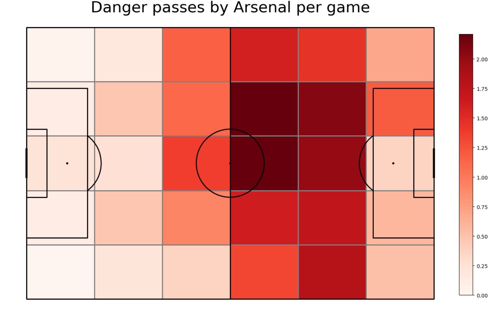
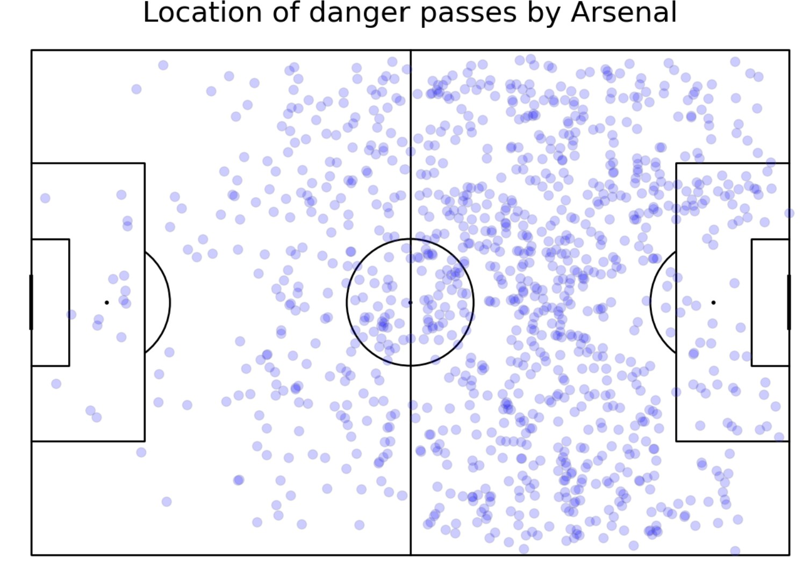
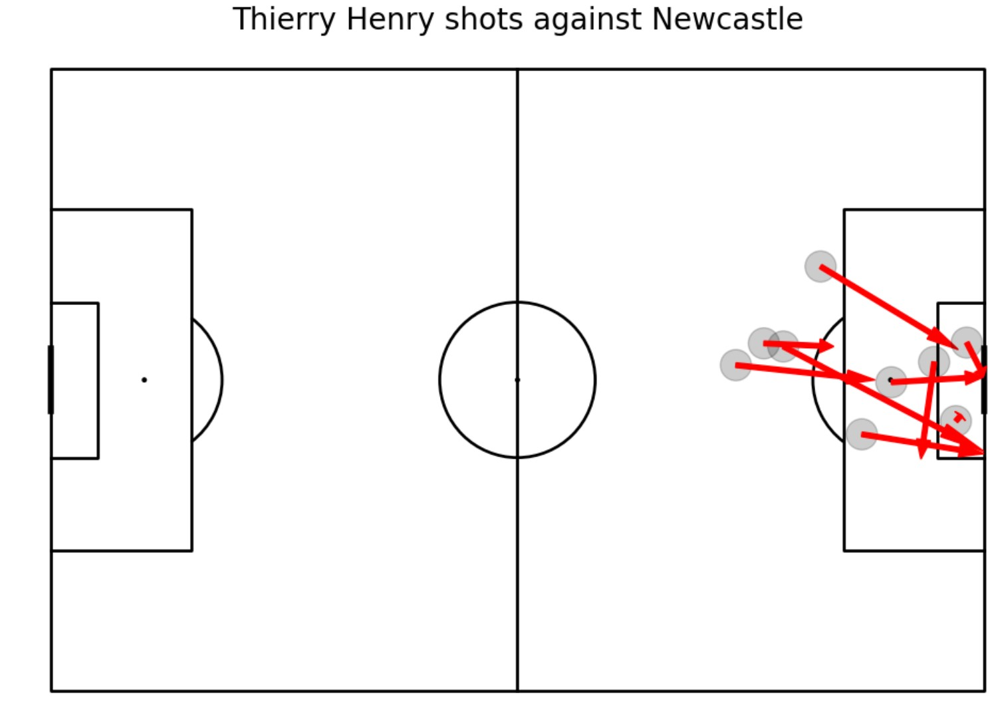
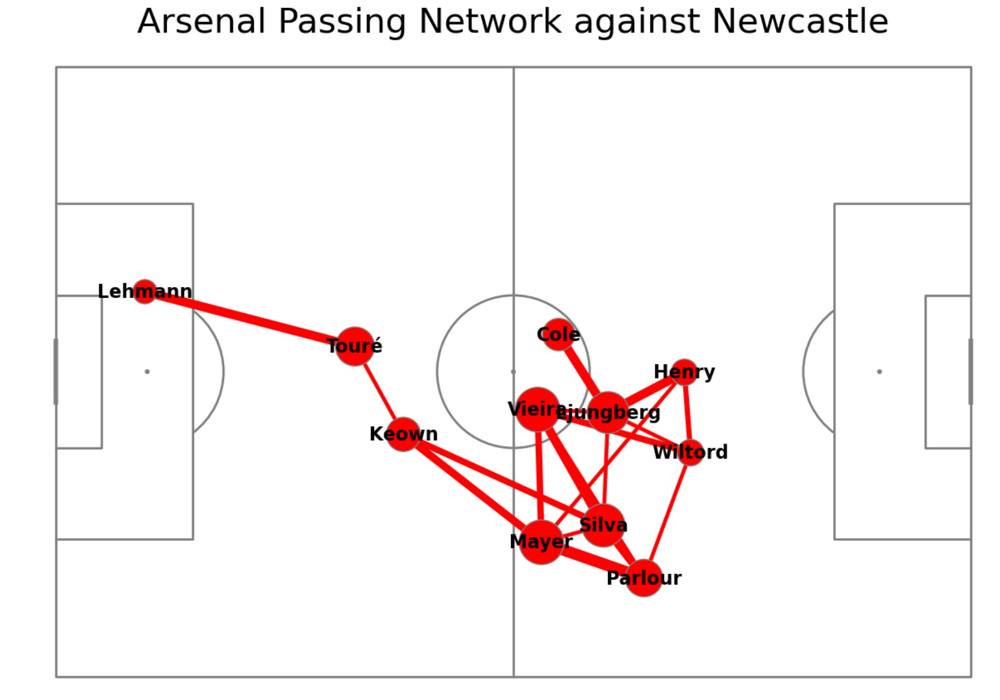
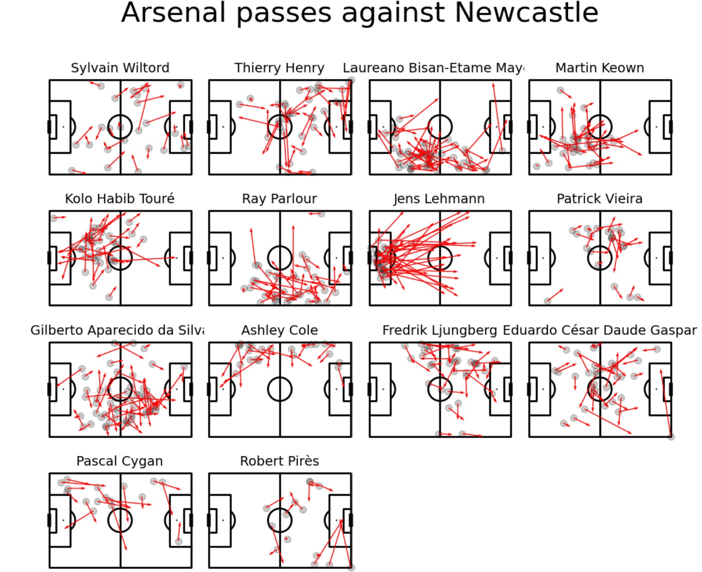
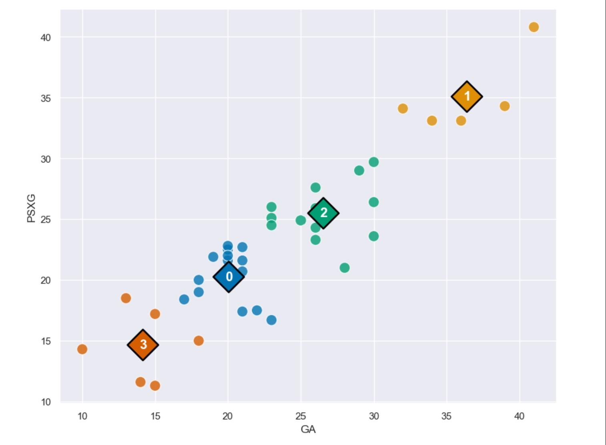

My Portfolio

Standard Match Analysis
Some standard match analysis, focussing on the visualisation of shots and passes.

Voronoi Diagrams
An example of a diagram type used to show how 'dominance' of control over the penalty box can be visualised.

Where did Thierry Henry take his shots from?
A map showing the start, and end, locations for Thierry Henry's shots against Newcastle in the 2003/04 Premier League season.

What shape did the team take in possession?
The average location taken by the Arsenal team when in receipt of the ball against Newcastle in the 2003/04 Premier League season.

Individual Pass Maps - Arsenal 03/04
Where did each player make passes from, and to what sort of distance?

K-Means Clustering example
A K-Means clustering example